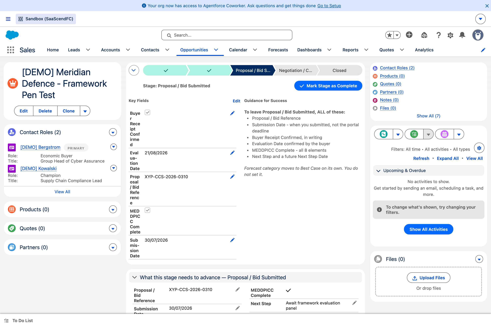

Creating a deal, click by click
From the Opportunities tab, click New.
Type the Opportunity Name using
Customer - Service - Year.Pick the Account. Search on part of the name — not the full legal name.Most customers are already loaded. Check before you create a duplicate.
Set the Close Date to your genuine expected decision date.Not a comfortable one.
Set Stage to where the deal really is today.Not Qualify out of habit. See the section below — this is the important one.
Add Amount, Type, Business Unit and Product / Service Line.
Set a Next Step and a Next Step Date in the future.Do it now. Without it you cannot move the deal later.
Click Save.It will save with the qualification fields still empty.
Coming from Zoho?
Most fields are the same idea under a different name. The vocabulary table covers the ones worth knowing — and the handful of concepts that have no Zoho equivalent at all.
What you actually need to save
Very little. Salesforce itself only insists on four things:
| Field | What to put |
|---|---|
| Opportunity Name | Customer - Service - Year |
| Close Date | Your genuine expected decision date |
| Stage | Where the deal really is today |
| Account | The customer |
Everything else can wait. The gates fire when you move stages, not when you save.
Create the deal at the stage it is genuinely at
This is the most useful thing on this site, and it is what makes rebuilding a pipeline by hand realistic rather than miserable.
Of the fourteen rules governing opportunities, eight only fire when the stage changes. They do not fire when a record is created. A deal created directly at Proposal / Bid Submitted does not have to satisfy the Qualify or Solution Validation exit criteria first.
The point
You do not have to fake history. Put the deal in at its real stage, with what you actually know.
| Create it at | Gates on creation? | What happens next |
|---|---|---|
| Qualify | None | Qualify’s exit criteria apply when you first move it |
| Solution Validation | None | Solution Validation’s exit criteria apply when you move it |
| Proposal / Bid Submitted | None | Proposal’s exit criteria apply when you move it |
| Negotiation | None | Negotiation’s exit criteria apply when you move it |
| Closed Won | Yes | Needs contract fields and Win Reason immediately |
| Closed Lost | Yes | Needs Loss Reason and Loss Detail immediately |
Proven, not assumed
Deals were created at all four open stages with only the basics filled in, as an ordinary sales user — all four saved. The two closed stages correctly refused. That test runs automatically so it cannot quietly stop being true.
The catch, so it does not surprise you
Creating at a late stage is free. Moving on from it is not. The exit gate for whatever stage you land on applies the moment you try to advance. Enter the deal where it really is, and you will be asked for exactly the information you should already have.

Contact roles look after themselves
Set the Economic Buyer and Champion lookups and the contact roles are created for you. Change either one and the existing role is repointed, not duplicated — so you end up with one role, not two.

Open a deal and find Economic Buyer in the qualification section.
Pick a contact and Save.
Open the Contact Roles panel on the left. The role is already there.
Now change Economic Buyer to someone else and save again.
Check Contact Roles again — still one Economic Buyer, now the new person.If you see two, tell us. That is the bug this was built to avoid.
Roles available if you add others by hand: Business User, Decision Maker, Economic Buyer, Champion, Economic Decision Maker, Evaluator, Executive Sponsor, Influencer, Technical Buyer, Other.